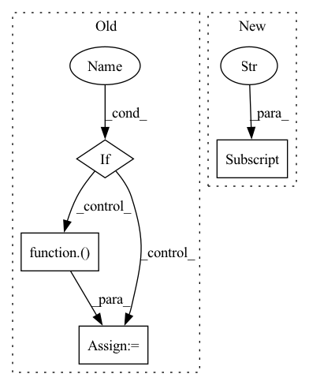

Pattern ID :32655
Before Change
inputs = tf.keras.Input(
shape=[len_seqs], batch_size=batch_size, dtype=tf.int32)
if one_hot :
x = tf.one_hot(inputs, depth=VOCAB_SIZE)
embed_size = VOCAB_SIZE
else:
x = tf.keras.layers.Embedding(
VOCAB_SIZE, embed_size, name="embedding")(
inputs)
// filter-wise dropout before conv, x.shape=[batch_size, len_seqs, embed_size]
if before_conv_dropout:
x = models_util.apply_dropout(
x, dropout_rate, use_mc_dropout, filter_wise_dropout=True)After Change
if gp_layer_hparams and gp_layer_hparams["gp_input_dim"] > 0:
// Uses random projection to reduce the input dimension of the GP layer.
x = tf.keras.layers.Dense(
gp_layer_hparams["gp_input_dim"] ,
kernel_initializer="random_normal",
use_bias=False,
trainable=False,In pattern: SUPERPATTERN
Frequency: 4
Non-data size: 4
Instances Fragment ID: 95034346
Project Name: google/uncertainty-baselines
Commit Name: 3602f67f107c01a884cdf85306690a9a066b8bbc
Time: 2020-08-26
Author: jjren@google.com
File Name: experimental/single_model_uncertainty/models/genomics_cnn.py
M Class Name: AnonimousClass
N Class Name: AnonimousClass
M Method Name: create_model(14)
N Method Name: create_model(14)
M Parent Class:
N Parent Class:
M File Name: experimental/single_model_uncertainty/models/genomics_cnn.py
N File Name: experimental/single_model_uncertainty/models/genomics_cnn.py
M Start Line: 113
M End Line: 170
N Start Line: 125
N End Line: 188
Before Change
x, y = preprocess_f(x, y)
if unnormalize:
x, _ = UnNormalize(normalization_mean, normalization_std)(x, None)
if image_tensor_to_numpy :
x, _ = ToPIL()( x, None)
x = np.asarray(x)
plt.subplot(w, h, i)
plot_image = plot_sample(task, x, y=y, mode="return", label_map=label_map)After Change
if unnormalize:
data = UnNormalize(normalization_mean, normalization_std)(data)
if image_tensor_to_numpy:
data["images"] = np.asarray(TF.to_pil_image(data["images"]))
plt.subplot(w, h, i)
plot_image = plot_sample( Fragment ID: 95034347
Project Name: krenerd/awesome-modular-pytorch-lightning
Commit Name: 3f592c9713d3bcd143a9a59dde3e93688e31f414
Time: 2022-06-07
Author: 48239275+krenerd@users.noreply.github.com
File Name: utils/visualization/utils.py
M Class Name: AnonimousClass
N Class Name: AnonimousClass
M Method Name: plot_samples_from_dataset(13)
N Method Name: plot_samples_from_dataset(12)
M Parent Class:
N Parent Class:
M File Name: utils/visualization/utils.py
N File Name: utils/visualization/utils.py
M Start Line: 58
M End Line: 69
N Start Line: 45
N End Line: 80
Before Change
segment_ids = tf.keras.layers.Input(shape=(self.max_seq_length,), dtype=tf.int32,
name="segment_ids")
pooled_output, _ = self.model_layer([input_word_ids, input_mask, segment_ids])
if (self.normalize) :
pooled_output = tf.keras.layers.Lambda(
lambda x: tf.nn.l2_normalize(x, axis=1))( pooled_output)
return tf.keras.Model(
inputs=dict(input_word_ids=input_word_ids, input_mask=input_mask, segment_ids=segment_ids),
outputs=pooled_output)
After Change
input_mask = tf.keras.layers.Input(shape=(self.max_seq_length,), dtype=tf.int32)
segment_ids = tf.keras.layers.Input(shape=(self.max_seq_length,), dtype=tf.int32)
outputs = self.model_layer(dict(input_word_ids=input_word_ids, input_mask=input_mask, segment_ids=segment_ids))
return ouputs["pooled_output"]
def init_tokenizer(self):
self.vocab_file = self.model_layer.resolved_object.vocab_file.asset_path.numpy()
self.do_lower_case = self.model_layer.resolved_object.do_lower_case.numpy() Fragment ID: 95034350
Project Name: vector-ai/vectorhub
Commit Name: e65f6bb13c702d3c6b24cd03371df7282749db01
Time: 2020-11-10
Author: jacky.koh@vylar.org
File Name: vectorhub/encoders/text/tfhub/bert.py
M Class Name: Bert2Vec
N Class Name: Bert2Vec
M Method Name: init(2)
N Method Name: init(2)
M Parent Class: BaseText2Vec
N Parent Class: BaseText2Vec
M File Name: vectorhub/encoders/text/tfhub/bert.py
N File Name: vectorhub/encoders/text/tfhub/bert.py
M Start Line: 38
M End Line: 50
N Start Line: 41
N End Line: 42